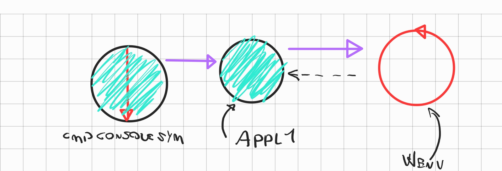
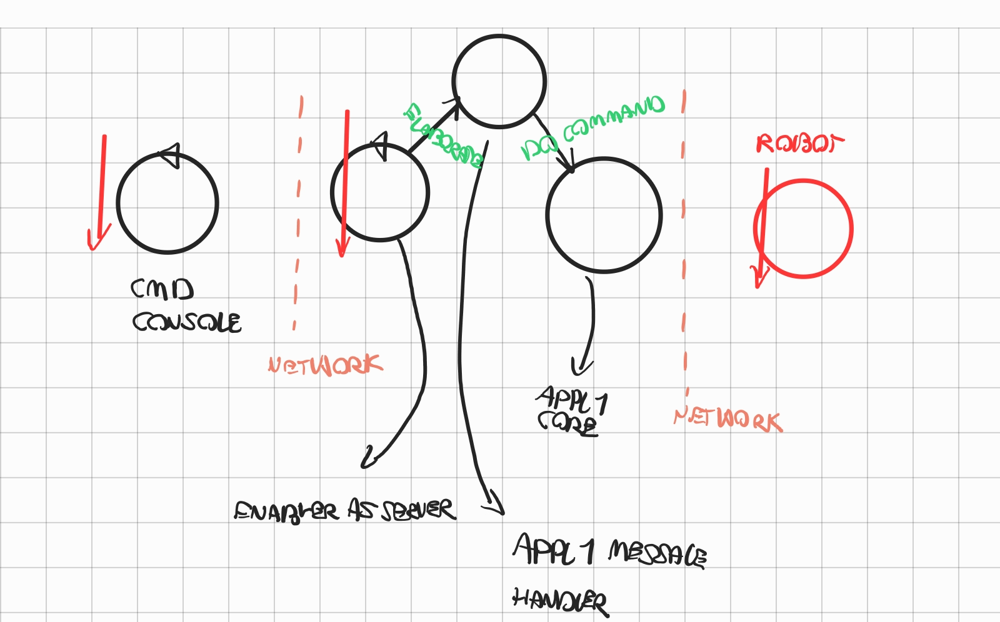

LABORATORIO DI INGEGNERIA DEI SISTEMI SOFTWARE
INTRODUZIONE
componenti ottenuti nello step 2
- APPL1CORE
- realizza le funzionalit\U000000e0 di logica applicativa
- COMMAND CONSOLE LOCALE
- command console locale al componente Appl1Core
ARCHITETTURA LOGICA
- 
REQUISITI
- In questa nuova fase dello sviluppo, dobbiamo superare le limitazioni che ci siamo imposti in precedenza, la command console deve diventare remota
ANALISI DEI REQUISITI
- L’applicazione Appl1 viene ora concepito come un ente attivo capace di ricevere messaggi (comandi start/stop/resume) via P e interpretare tali messaggi, convertendoli in comandi a Appl1Core (e di qui a VirtualRobot23).
- CmdConsole deve diventare un ente attivo che interagisce con un utente umano e che invia comandi ad Appl1 usando il protocollo P
ANALISI DEL PROBLEMA
- command console
- la console deve comunicare delle informazioni via rete, non \U000000e8 piu possibile effettuare una procedure call
- la command console deve essere indipendente dal protocollo di comunicazione utilizzato
- appl1
- per evitare di reimplementare la logica applicativa si decide di inglobare il POJO appl1Core in un adapter in grado di ricevere comandi dalla command console
- l'adapter deve essere indipendente dal protocollo di comunicazione utilizzato
- NECESSARIO DEFINIRE UN LAYER DI ASTRAZIONE PER IL SUPPORTO DI COMUNICAZIONE
supporto di comunicazione
- astrazione al supporto di comunicazione
- interfaccia per le funzionalit\U000000e0 necessarie al supporto di comunicazione client
- questa astrazione pu\U000000f2 essere utilizzata per definire le necessit\U000000e0 della comunicazione fra qualunque dei due componenti
configurazione mediante file
- sfruttare pattern factory per fornire alle classi la corretta implementazione
linguaggio di comunicazione
id:: 6419b507-442e-4455-8a2e-b521439e7fa5
- necessario definire in maniera formale il linguaggio di comunicazione tra console e componente Appl1
- la comunicazione avviene tramite stringhe in formato json
{command:CMD}CMD= start|stop|resume
TIPOLOGIE DI MESSAGGI
- la comunicazione tra command console e Appl1 avviene tramite dispatch dato che la command console non necessita di ricevere informazioni da Appl1
- la comunicazione tra Appl1 e virtual robot avviene tramite request
ARCHITETTURA LOGICA
PIANO DI LAVORO
:LOGBOOK:
CLOCK: [2023-03-21 Tue 14:36:31]
:END:
command console (client)
id:: 6419b2af-7f44-44e9-a934-aa788055c0bc
- sviluppo interfaccia supporto di comunicazione client
- sviluppo di implementazione pilota su protocollo di esempio (HTTP)
- sviluppo di factory per interfaccia di comunicazione client
- sviluppo di classe di integrazione per la comunicazione della command console
componente Appl1
id:: 6419b3e0-6e09-4ab1-afbf-01aa506ecb44
- sviluppo interfaccia per supporto di comunicazione server
- sviluppo di implementazione pilota su protocollo di esempio (HTTP)
- sviluppo di factory per interfaccia di comunicazione server
- le due fasi ((6419b3e0-6e09-4ab1-afbf-01aa506ecb44)) e ((6419b2af-7f44-44e9-a934-aa788055c0bc)) possono essere sviluppate in parallelo da team indipendenti che hanno come vincolo il linguaggio definito in ((6419b507-442e-4455-8a2e-b521439e7fa5))
comunicazione con WS
- la ricezione dei messaggi inviati dal robot tramite ws prevede una semantica asincrona non bloccante
- necessario definire un contratto con i componenti di alto livello per specificare la semantica delle chiamate
PROGETTAZIONE
architettura del sistema
- 
- Appl1 sfrutta il supporto per ricevere messaggi da cmd console e definisce un handler che viene lanciato alla ricezione dei pacchetti il quale a sua volta esegue le funzionalit\U000000e0 offerte da appl1 core
DEPLOYMENT
Configurazione
- i componenti Appl1 e Command console necessitano di essere configurati in maniera concorde
- configurazione statica
- configurazione determinata a runtime (handshake)
- la configurazione statica in un primo momento risulta piu immediata e meno time consuming
By Matteo Longhi email: matteo.longhi5@studio.unibo.it,
GIT repo: https: